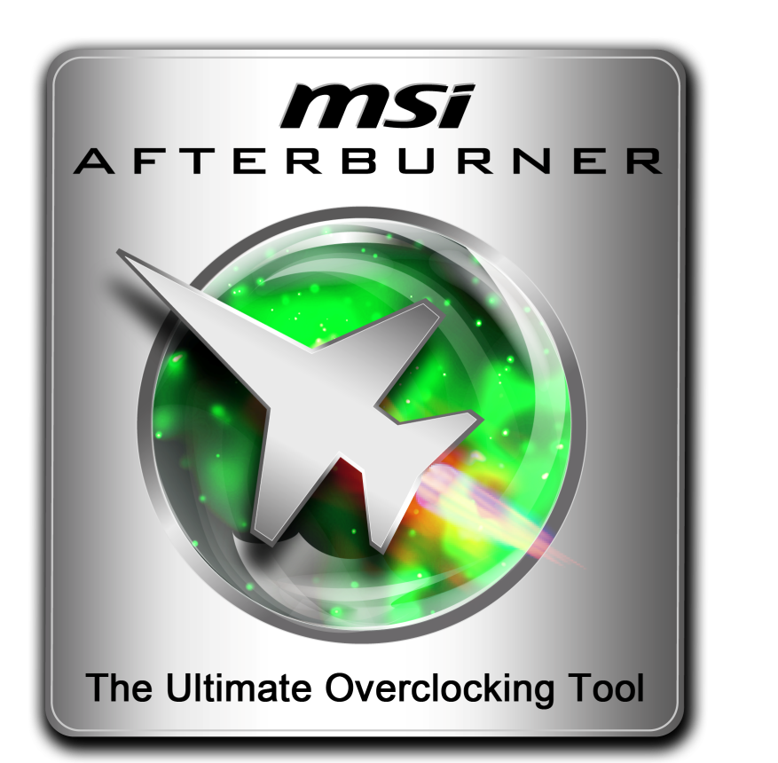
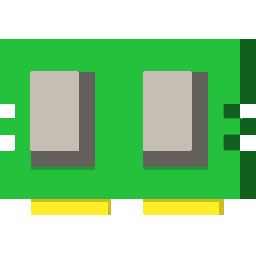
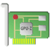

VLC
Удобный проигрователь видео и музыки.Скачать

OBS
Лёгкая запись с экрана ПК, абсолютно бесплатнаСкачать

MSI Afterburner
Программа для разгона видеокарты, настройка кулеров видеокарты, а также отображения ФПС и прочих сведений.Скачать

Mem Reduct
Делает использование ОЗУ у программ намного меньше, не закрывает прочие программыСкачать

GPU-Z
Показывает характеристики вашей видеокарты, в том числе и версию BIOSСкачать